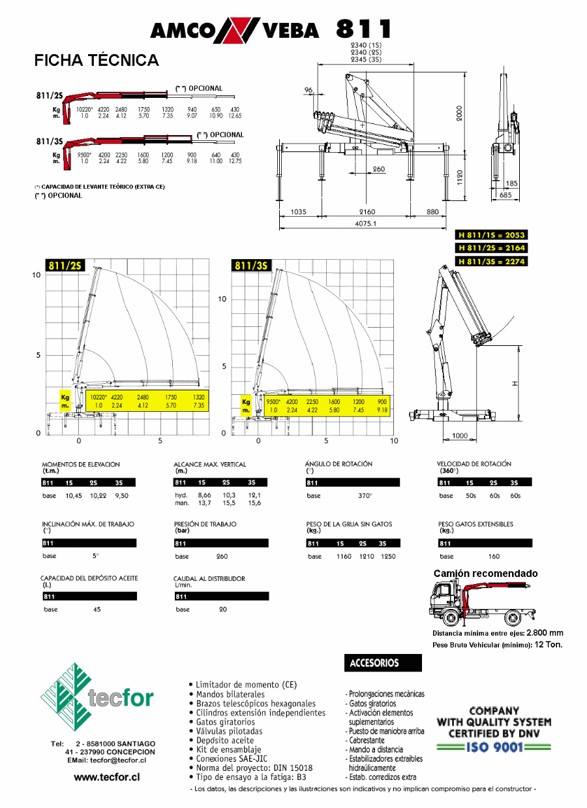

|
FICHA TECNICA TECFOR |
|
Grúa hidráulica italiana marca AMCO VEBA , modelo 811 / 2S para montar sobre camión : |
|
|
Grúa hidráulica de dos brazos articulados para montar sobre chasis
de camión ; con accionamiento a la toma de fuerza y bomba hidráulica OMFB ; equipada con dos estabilizadores
de extensión lateral manual y vertical hidráulica; dos extensiones hidráulicas ; gancho giratorio
para cargas; rotación 370°; válvulas de seguridad para evitar averías por sobrecarga y/o
rotura de mangueras ; cinco cuerpos de comandos en ambos costados ; manuales en español .
Trineumáticos - Grúas Forestales - Garras - Rotores - Grúas Industriales - Plataformas Hidráulicas - Equipos de Auxilio Carretero Panamericana Sur Km. 25 - San Bernardo É 8581000 - 8573515 Fax 56 - 2 - 8581007 E-Mail: tecfor@tecfor.cl - Santiago - Chile Calle Nueva 1330 (Paicaví con Autopista) É 237990 - Fax 56 - 41- 232665 - E-Mail: tecforccp@tecfor.cl - Concepción - Chile
|
|
|

Trineumáticos - Grúas Forestales - Garras - Rotores - Grúas Industriales - Plataformas Hidráulicas - Equipos de Auxilio Carretero Panamericana Sur Km. 25 - San Bernardo É 8581000 - 8573515 Fax 56 - 2 - 8581007 E-Mail: tecfor@tecfor.cl - Santiago - Chile Calle Nueva 1330 (Paicaví con Autopista) É 237990 - Fax 56 - 41- 232665 - E-Mail: tecforccp@tecfor.cl - Concepción - Chile |
|